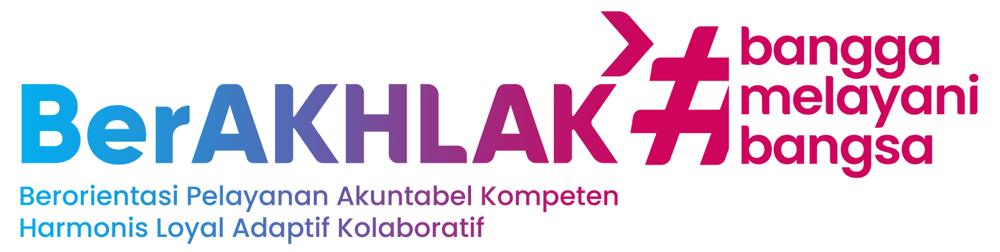

SATYALANCANA
Permohonan Usul Satyalancana
Copyright © 2025.
Badan Kepegawaian dan Pengembangan Sumber Daya Manusia Daerah (BKPSDMD) Kabupaten Merangin.
All Rights Reserved
 Jl. Jendral Sudirman, No. 01, Kel. Pematang Kandis, Kec. Bangko, Kab. Merangin, Prov. Jambi - Indonesia | Kode Pos - 37313
Jl. Jendral Sudirman, No. 01, Kel. Pematang Kandis, Kec. Bangko, Kab. Merangin, Prov. Jambi - Indonesia | Kode Pos - 37313
 +62851 5999 7813
+62851 5999 7813
 bkd.merangin@gmail.com
bkd.merangin@gmail.com
Hari Ini
Total
